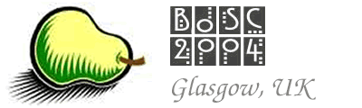

The conference
The 5th annual Bioinformatics Open Source
Conference (BOSC'2004) is organized by the not-for-profit Open
Bioinformatics Foundation. The meeting will take place July
29-30, 2004 in Glasgow, Scotland and is one of several Special
Interest Group (SIG) meetings occurring in conjunction with the 12th
International Conference on Intelligent Systems for Molecular Biology.
The focus of the meeting will be on current and emerging Open Source**
informatics tools and toolkits. BOSC provides a forum for developers, project groups,
users and interested parties to meet personally, exchange ideas and collaborate
together.
In addition, Wolfgang Huber of the BioConductor Project will deliver the keynote speach. His talk is titled :
The Bioconductor Project: Open software development for computational biology and bioinformatics.
REGISTRATION & INFORMATION
For information concerning ISMB and all Special Interest Groups associated with
it, and to register, please visit the ISMB website.
MEETING SCHEDULE & ABSTRACTS
After careful deliberation, eleven abstracts were selected from a very
competitive group of submissions this year. In addition, because we recieved several strong submissions for
this category, a special 'Annotation Database' presentation section was created this year featuring presentations
on this subject.
Accepted Abstracts ***with links to presentation slides***
Annotation Database Abstracts ***with links to presentation slides***
BOSC Schedule ***with links to Presentation Slides***
Lightning-talk Speakers wanted!
The program committee is currently seeking
speakers for the lightning talks at BOSC 2004. Lightning talks are quick -
only five minutes long - and a great opportunity for you to give people
a quick summary of your open source project, code, idea, or vision of
the future.
If you are interested in giving a lightning talk at BOSC 2004, please
email <bosc@open-bio.org>
the following:
* a brief title and summary (one or two lines)
* a URL for the project page, if applicable
* information about the open source license used for your software or
your release plans.
We will accept entries on-line until BOSC starts, but
space for demos and lightning talks is limited.
Software Demonstrations wanted!
If you are involved in the development
of Open Source Bioinformatics Software, you are invited to provide a
short demonstration to attendees of BOSC 2004.
If you are interested in giving a software demonstration at BOSC 2004, please
email <bosc@open-bio.org>
the following:
* a brief title and summary (one or two lines)
* a URL for the project page, if applicable
* Internet connectivity requirements (e.g. website Application served on the
world wide web, or web based client application).
We will accept entries on-line until the BOSC starts, but
space for demos and lightning talks is limited.
** Because the mission of the OBF is to promote Open Source software, we will favor submissions for
projects that apply a recognized Open Source License,
or adhere to the general Open Source Philosophy.